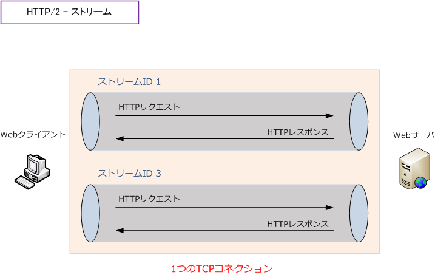
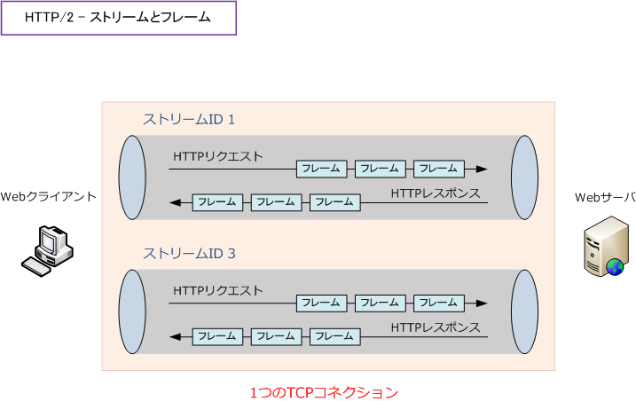
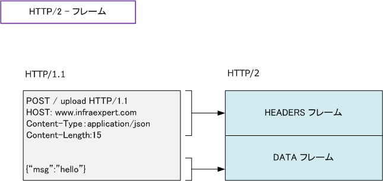
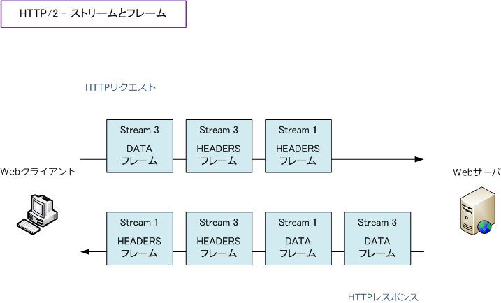
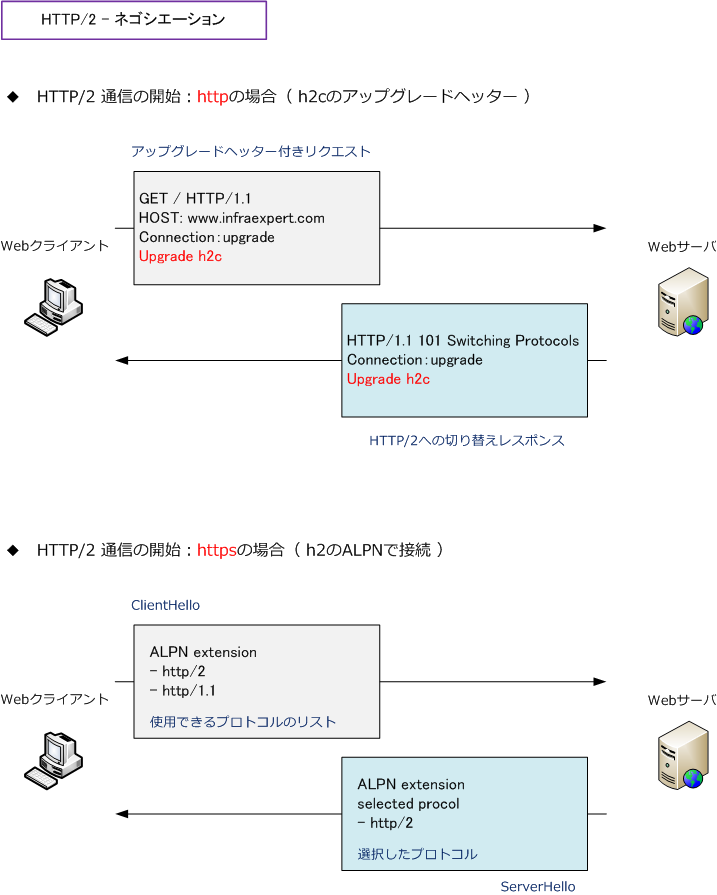
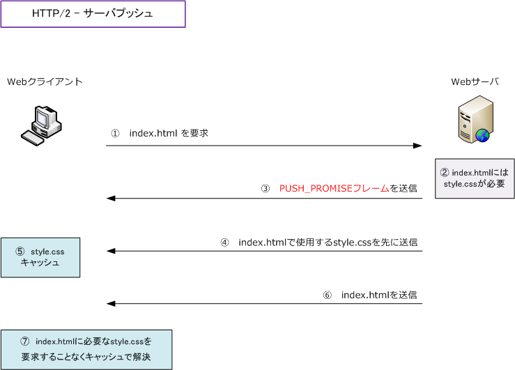

HTTP/2
HTTP/2（Hypertext Transfer Protocol version 2）とは
HTTP/2は、WebサーバとWebクライアントがデータを送受信するために使用するHTTPのバージョン2です。 HTTPは、1997年にバージョン1.1が導入されてから長年にわたり使用され続けていますが、速度が向上する HTTP/2が2015年に標準化されてからは、HTTP/2が広く普及しつつあります。
2010年代からWebページのコンテンツが複雑化して、HTTP1.1を使用した通信ではWebページの表示速度の 遅延が発生するケースが出てきました。そこで、Google社がHTTPメッセージをより効率よく転送するSPDY というプロトコルを開発し、自社のプロダクト群へ展開して改善の効果を確認していましたが、その実績から SPDYはHTTP/2の標準化の開始点として選定され、2015年11月にHTTP/2の標準化に至ることになりました。 ※ HTTP/2が標準化されたことで、Google社も自社のプロダクト群に対して、SPDYではなくHTTP/2を使用するようになりました。
HTTPのバージョン
HTTPのバージョンには3つのバージョンがありますが、HTTP/2とHTTP/3ともに広く普及しつつあります。
| HTTPバージョン | 派生元 | RFC | 導入年 |
|---|---|---|---|
| HTTP/1.1（ HTTPバージョン1.1 ） | - | RFC 9112 | 1997年 |
| HTTP/2（ HTTPバージョン2 ） | SPDY | RFC 9113 | 2015年 |
| HTTP/3（ HTTPバージョン3 ） | QUIC | RFC 9114 | 2022年 |
HTTP/2 - ストリーム
HTTP/1.1では、HTTPリクエストとレスポンスをやり取りするごとにTCPコネクションを切断していますが HTTP/2では、1つのTCPコネクション上で複数のHTTPリクエストとHTTPレスポンスを多重化することで、 複数のHTTPメッセージを並列的にやりとりできます。
HTTP/2のTCPコネクション上でのHTTPリクエストとHTTPレスポンスのやりとりを管理するための概念を ストリームと言います。下図のとおり、1対のHTTPリクエストとレスポンスが1つのストリームに属します。 一度使用したストリームは再利用されることなくて、HTTPレスポンスを受信すると使用されなくなります。

ストリームにはストリームIDと呼ばれる一意のIDがあります。Webクライアントから開始したストリームは 奇数のストリームIDを使用して、Webサーバから開始されるストリームは偶数のストリームIDを使用します。 コネクション自体を意味する制御用の ストリームID 0 は、HTTPメッセージのやりとりでは使用されません。
HTTP/2 - フレーム
HTTP/2では、この仮想的な通信単位であるストリームごとにフレームというメッセージをやりとりします。

HTTP/1.1では、テキスト形式のメッセージをやりとりしますが、HTTP/2ではバイナリ形式のメッセージを やりとりします。HTTP/2でやりとりされるフレームは使用用途ごとに10種類のフレームタイプがあります。 HTTP/2ではHTTPリクエストとレスポンスはHEADERフレームとDATAクレームを組み合わせて表現します。
| タイプ値 | フレーム名 | 役割 |
|---|---|---|
| 0 | DATA | HTTPリクエストやHTTPレスポンスのデータであるHTTPボディを送信 |
| 1 | HEADERS | HTTPリクエストヘッダやHTTPレスポンスヘッダのヘッダを送信 |
| 2 | PRIORITY | ストリームの優先度を変更（クライアントのみ送信可能） |
| 3 | RST_STREAM | HTTPリクエストのキャンセルやエラーが発生した場合にストリームを強制終了 |
| 4 | SETTINGS | コネクションの接続設定の変更 |
| 5 | PUSH_PROMISE | サーバプッシュに用いるストリームを予約（サーバのみ送信可能） |
| 6 | PING | アイドル状態のコネクションが維持できているのかを確認 |
| 7 | GOAWAY | コネクションの切断処理の開始 |
| 8 | WINDOW_UPDATE | フロー制御のためにウィンドウサイズを変更 |
| 9 | CONTINUATION | 1フレームで送信できないサイズのHEADERS/PUSH_PROMISEフレームの継続送信 |
HTTPリクエスト/レスポンスの本体はDATAにあり、リクエスト/レスポンスヘッダーはHEADERSフレームに入れてやり取りします。

ストリームで送受信される全てのフレームはどのストリームのデータなのかを示すストリームIDを持ちます。 HTTPリクエストとHTTPレスポンスはストリーム上で多重化されて送信されますが、一度に並べて送信する ことはできず、実際は順不同にフレームとして送信されます。しかし、すべてのフレームはストリームIDを 持つため、Webクライアントとサーバはどのストリームに関するフレームのやりとりなのかを認識できます。

HTTP/2 - ネゴシエーション（通信の開始）
HTTP/2では、バイナリ形式のメッセージ（フレーム）を送信するのでHTTP/1.1とは互換性がありません。 しかし、HTTP/1.1とHTTP/2はともにTCPポート番号80、443を使用して通信するため、HTTP/2通信を 開始する際に通信先とHTTP/2を使用することを合意する必要があります。httpの場合とhttpsの場合とで 使用できる通信開始方法が異なります。
| 使用プロトコル | 説明 |
|---|---|
| http | HTTP/1.1で通信を開始し、UpgradeヘッダーによりそのコネクションをHTTP/2通信にアップグレード。 |
| https | TLS拡張機能のALPNを使用。TLSハンドシェイク時に内部プロトコルを交渉する機能を使用する。 |

HTTP/2 - サーバプッシュ
HTTP/1.1では、クライアントからのHTTPリクエストを受信してからサーバがHTTPレスポンスを返します。 HTTP/2にはサーバプッシュという機能があり、クライアントがリクエストしたページに紐付くコンテンツを サーバがHTTPリクエストを受信していない段階でも、先行して送信できるので、待ち時間が少なくなります。

サーバプッシュは、HTTPリクエストを受信してからHTTPレスポンスを返す間にサーバがPUSH_PROMISEの フレームを送信することで開始できます。PUSH_PROMISEにはサーバプッシュで使用するストリームの予約、 サーバプッシュするHTTPレスポンスがどのような内容であるのかが記述されています。サーバから先行して 送信されたHTTPレスポンス（プッシュされたリソース）をクライアントはキャッシュします。クライアントは HTTPリクエストの送信前に確認して、必要なデータがキャッシュされている場合はキャッシュを使用します。
HTTP/2 - 優先度
HTTP/2では、ストリームごとに優先度を設定することが可能であり、例えばコンテンツの表示にあたり必須 となるデータを優先して送信するような処理も可能であり、画像よりもJavaScriptやCSSファイルを優先して Webブラウザに送信できるので、Webページの表示が早くなります。
WebクライアントはHTTPリクエストに優先度を指定できます。例えばPRIORITYフレームで優先度を変更する ことが可能であり、優先度の指定はStream Dependency、Weightというパラメータを用います。HEADERS フレームに追加されるのStream DependencyとWeightはPRIORIYフラグが設定された場合にのみ存在します。
| HEADERSフレーム（追加フィールド） | 説明 |
|---|---|
| Stream Dependency | 31ビットのストリームID |
| Weight | ストリーム優先度の重みを示す8ビットの符号なし整数 |
HTTP/2 - ヘッダ圧縮
HTTP/1.1では、HTTPリクエストの度にUser-Agent、Webブラウザ、Accept-Encodingなどのヘッダ情報を 送信していました。Webクライアントが同じWebサーバに画像などの多くのリソースを要求した場合は同様の HTTPリクエストヘッダが大量に送られることになります。
HTTP/2では、RFC7541で標準化されたHPACKというヘッダ圧縮方式を使用しており、一度送信したHTTP ヘッダをそのまま再送信することなく、ハフマン符号を用いることで文字列トータルのデータ量を削減したり インデックステーブルを使用し、インデックス番号を指定することでそのヘッダを表現できるようになるので HTTP/2ではHTTPヘッダは圧縮されることになり、Webサーバでの処理やトラフィック軽減につながります。
HTTP/2 - TLS利用時の順守事項
HTTP/2でTLSを使用する際は以下のルールを順守する必要があり、順守されない場合はHTTP/2レイヤーで コネクションエラーとして切断されます。
・ TLS上のHTTP/2に対して、TLS 1.2（TLSバージョン1.2）以上を使用する必要がある。 ・ プロトコルの選択にALPN（RFC7301）を使用する。 ・ TLSの実装は、TLSのSNI（Server Name Indication）拡張に対応する必要がある。 ・ TLS1.2上のHTTP/2のデプロイメントは、圧縮（TLS Compression）を無効にする必要がある。 ・ TLS1.2上のHTTP/2のデプロイメントは、再ネゴシエーションを無効にする必要がある。 ・ TLS1.2上のHTTP/2のデプロイメントは、仕様で定義された暗号スイートを使用する必要がある。 ・ 鍵長はDHEの暗号スイートには2048bit以上、ECDHEの暗号スイートには224bit以上のサポート必須。